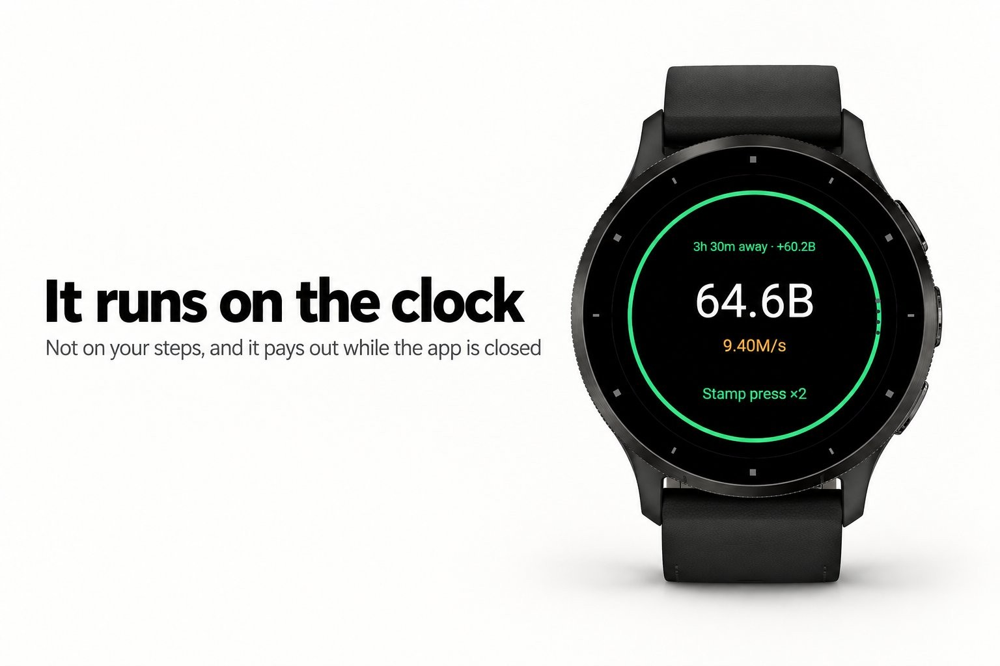
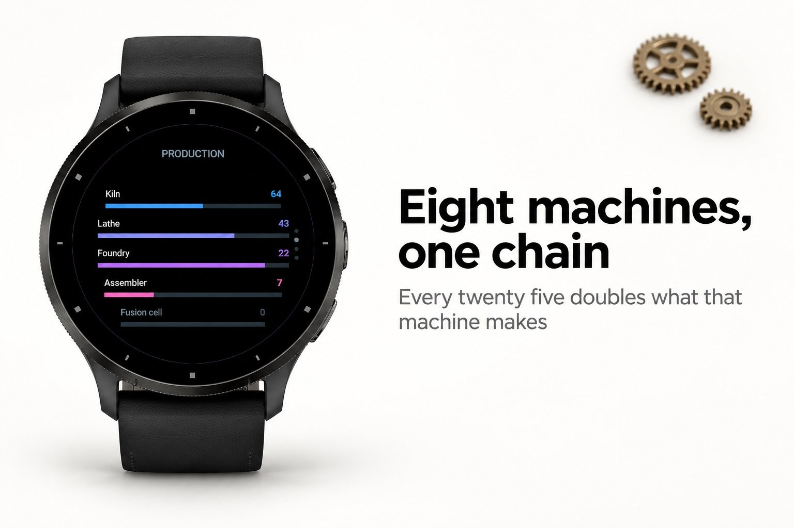
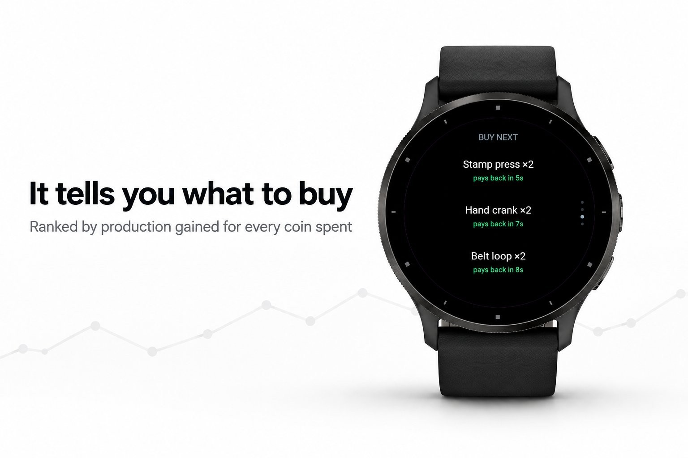
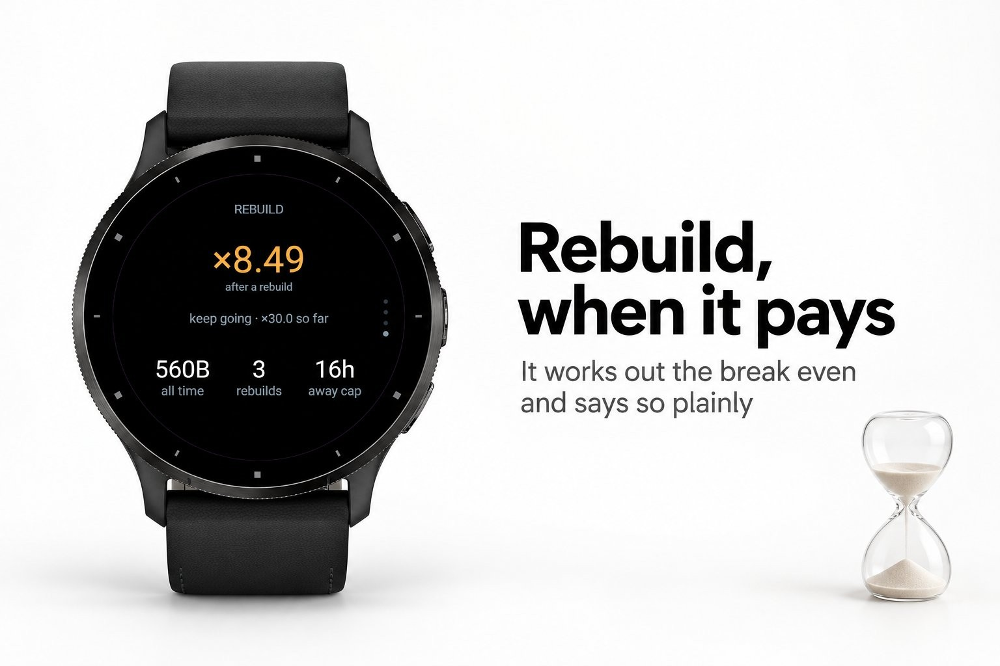

Games & puzzles · Device app
An idle factory on your wrist.




An idle game asks the same question over and over: what to buy next. Then it hides the
answer behind numbers nobody can compare in their head. A machine at 4.1e17 coins that
adds 9.2e14 a second, against an upgrade at 8.8e16 that doubles something older. Most
people give up and buy whatever is newest, which is usually the wrong answer.
Coglet works that comparison out. Every purchase on offer, a machine, a hundred of
them at once, an upgrade, a manager, a wider away window, is scored the same way:
production added per day against coins spent, which comes out as a payback time. That
one figure is what lets a machine, an upgrade and a manager be ranked against each
other at all. The front page names the shortest payback standing, what it costs and how
long it takes to earn itself back, or how long until the balance covers it. The rebuild
screen answers the other question the genre never answers: whether prestige is worth
taking now, and how long it takes to get back to where the factory already is.
widens the away window from eight hours to sixteen and then to twenty-four
cost one multiplication rather than a loop the watchdog would cut short
away window, with machines that have no manager idling at a quarter speed
says plainly whether it is worth it now and when it pays back
K, M, B, T and on through letter pairs, never as scientific notation
Nothing but the watch. No phone, no signal, no account.